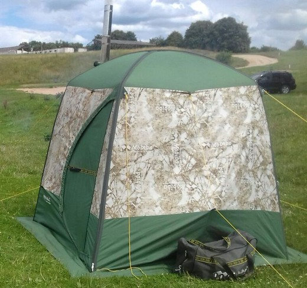
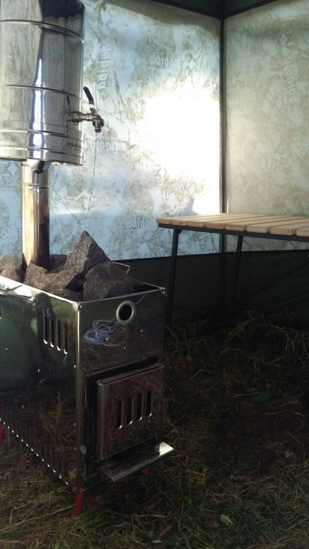

Мобильная баня с полком и парогенератором
|
Снаружи  |
Внутри с полком  |
Мобильная баняХарактеристика товара
|
Подробное описание товара
Форма тента, приближенная к кубику с размерами 2х2х2 метра, обеспечивает удобную эргономику пространства. Снаружи мобильная баня кажется небольшой, но это обманчивое впечатление. Внутри есть место, где поставить банный полок и париться не только сидя, но и лежа. При этом останется еще достаточно места, чтобы банщик парил веником человека лежащего на складном полке, а у двери на табуретке будет дожидаться своей очереди еще один человек. Если просто погреться в горячем банном березовом аромате, то сидя на полке разместится до 4 человек. И еще один-двое у двери. По нашему опыту пользования вот такой небольшой парилки хватает на компанию до десяти человек во время пляжного отдыха летом. Одни парятся, другие купаются. Потом меняются.